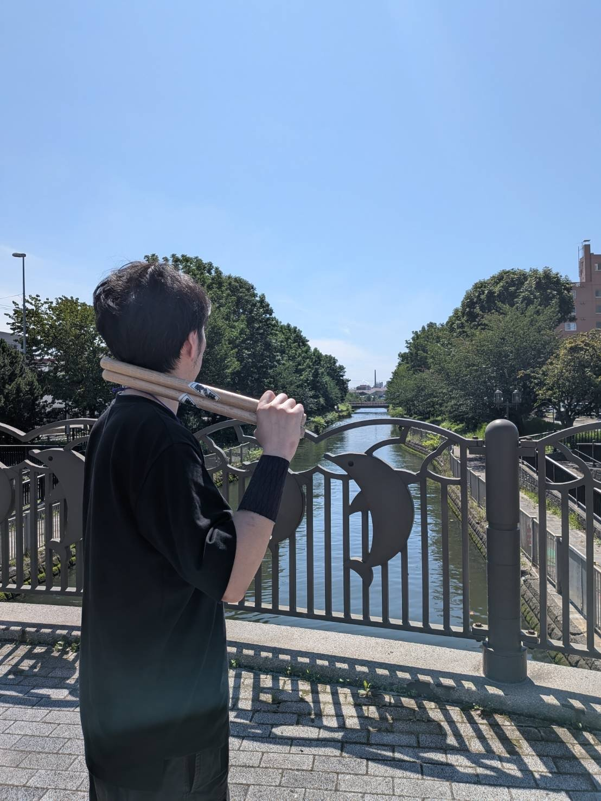
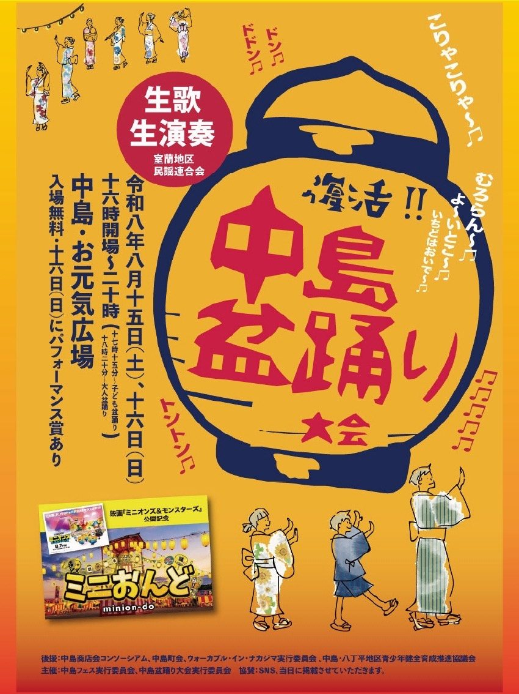

輸入 BLACKJACK
プレイヤー対CPUで遊べる、ブラウザ向けブラックジャックゲーム。スマートフォンからもプレイできます。
※さらば青春の光 公式YouTubeチャンネルの動画をもとに制作した非公式ファンメイド作品です。
WADAIKO PLAYER
SHUHEI
和太鼓奏者

一打に、
意志を込める。
01
PROFILE
1996年、「北響祭・300人太鼓」への出演をきっかけに室蘭太鼓同好会へ入会。翌年の600人太鼓を経て、1998年には1,845人が一斉に太鼓を打ち、当時ギネス世界記録に認定された「千人太鼓」に参加する。
その後は室蘭和太鼓会やソロ奏者として、各種全国大会に出場。上京を機に一度太鼓から離れるも、十数年の時を経て室蘭へ戻り、演奏活動を再開。
現在はソロの和太鼓奏者として、演奏をはじめ、作曲・編曲、映像制作など幅広い表現活動に取り組んでいる。
02
ACTIVITIES
WADAIKO / SHINOBUE PERFORMANCE
開催終了
両日とも、開催時間中は秀平が和太鼓と篠笛を演奏しました。

COMPOSITION / ARRANGEMENT
VIDEO PRODUCTION
APPLICATION DEVELOPMENT
プレイヤー対CPUで遊べる、ブラウザ向けブラックジャックゲーム。スマートフォンからもプレイできます。
※さらば青春の光 公式YouTubeチャンネルの動画をもとに制作した非公式ファンメイド作品です。
素材の理解から構成・字幕・演出案まで、AIと相談しながら映像の初稿制作を支援するアプリ。
動画音声を文字起こしし、読みやすい字幕を生成してFilmora向けに出力するWindowsアプリ。
字幕や素材をもとに、Filmoraのプロジェクト作成・編集を自動化する制作ツール。
公開情報を比較・整理し、ホテル運営で優先すべき対応を提示する営業デモアプリ。
指定時刻にブラウザとOBSを動かし、ラジオ番組を自動録画・圧縮してDropboxへ整理保存するWindows自動化ツール。
複数のAIが競馬予想で対決し、予算・購入・結果・通算成績まで管理するDiscord Bot。
03
CONTACT